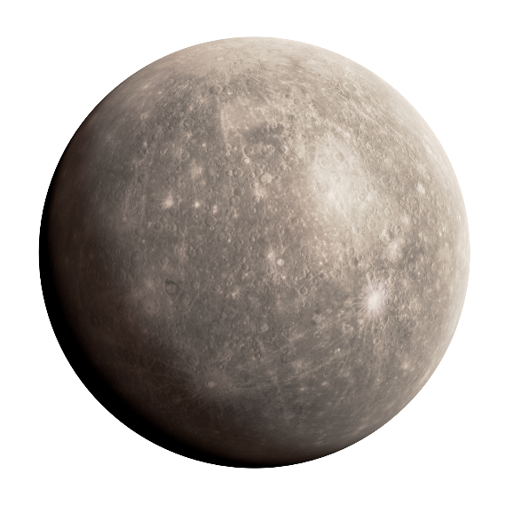
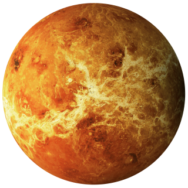
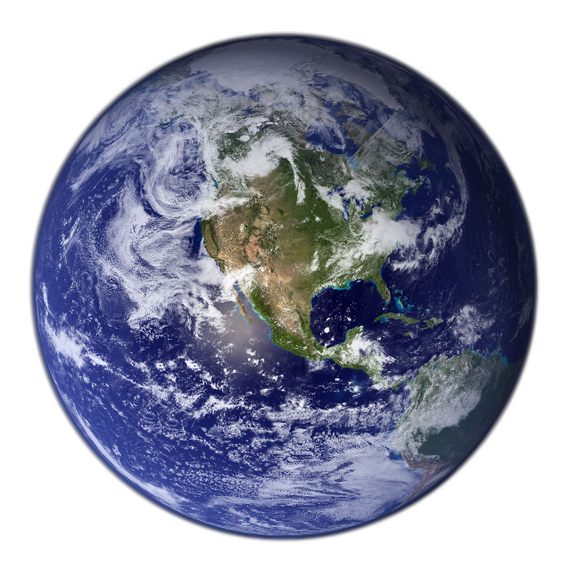
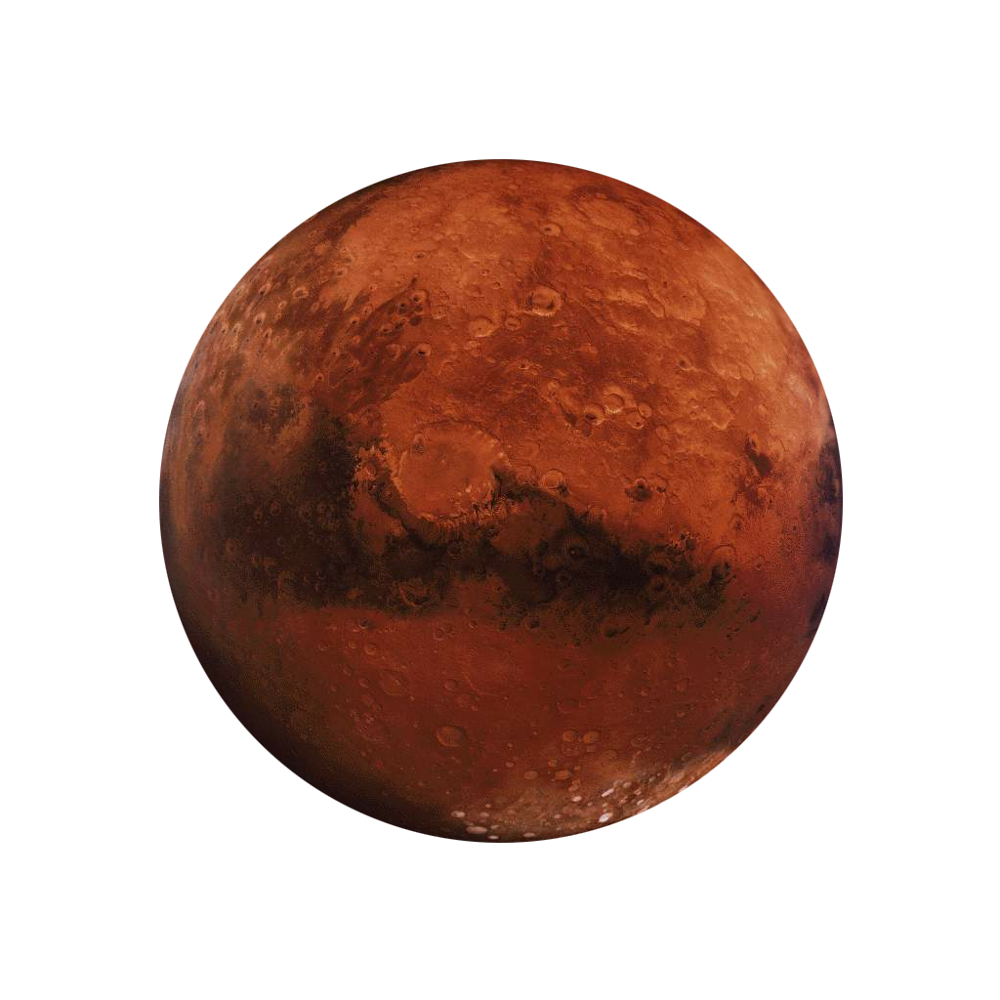
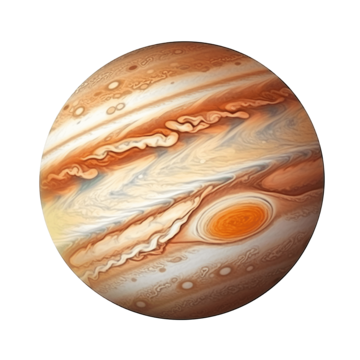
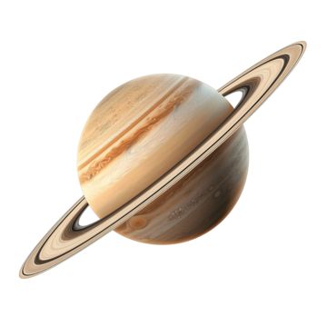
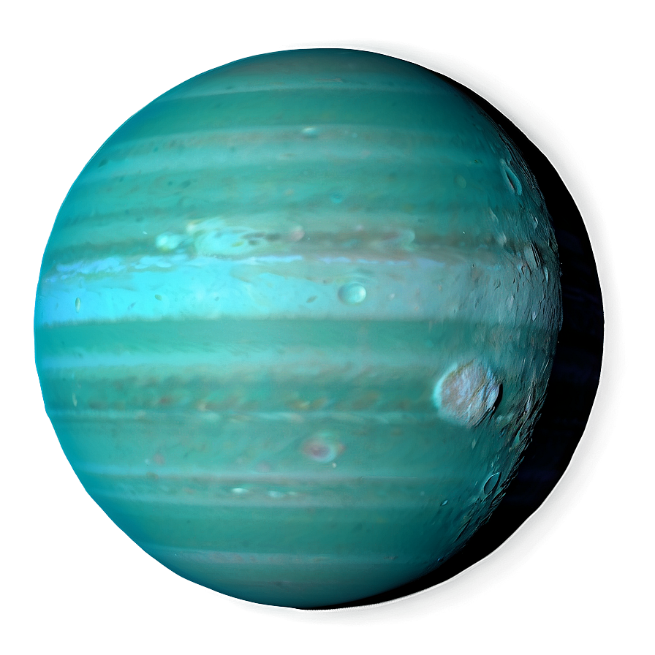
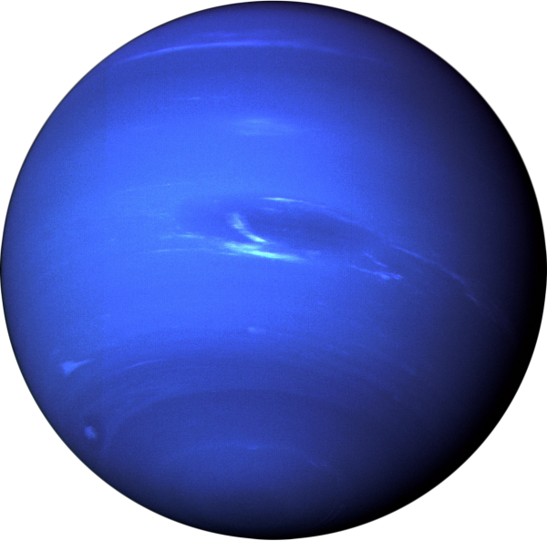

Planets of the Solar System
The eight planets in our solar system vary greatly in size, composition, and distance from the Sun. Divided into two main categories—rocky terrestrial planets and gas giants—each planet has unique features, from Mercury’s cratered surface to Neptune’s powerful winds. In this section, we’ll take a closer look at the defining characteristics of each planet and their place in the solar system.
Mercury
The smallest and closest planet to the Sun, Mercury has extreme temperature swings, with scorching heat during the day and freezing cold at night. Its surface is rocky and heavily cratered, similar to Earth’s moon.
Venus
Often called Earth’s “sister planet” due to its similar size, Venus has a thick, toxic atmosphere that traps heat, making it the hottest planet in the solar system. Its surface is covered in volcanoes and barren plains.
Earth
The only planet known to support life, Earth has a breathable atmosphere, and a surface mostly covered in water. It has diverse climates and ecosystems, and its natural satellite, the Moon, affects the planet’s tides.
Mars
Known as the “Red Planet” due to its iron-rich soil, Mars has the largest volcano and canyon in the solar system. Evidence of ancient rivers and lakes suggests it may have once supported life, and it’s a primary target for future exploration.
Jupiter
The largest planet in the solar system, Jupiter, is a gas giant with a massive atmosphere mostly made of hydrogen and helium. Its Great Red Spot is a giant storm larger than Earth, and it has dozens of moons, including Ganymede, the largest moon in the solar system.
Saturn
Famous for its stunning ring system, Saturn is a gas giant like Jupiter. Its rings are made of ice and rock, and it has over 80 moons, including Titan, which has lakes of methane and ethane on its surface.
Uranus
An ice giant, Uranus is unique due to its extreme tilt, which causes it to rotate on its side. Its atmosphere is mostly hydrogen, helium, and methane, giving it a blue-green color. Uranus also has faint rings and 27 moons.
Neptun
The farthest planet from the Sun, Neptune is another ice giant known for its intense storms and strong winds. Its deep blue color is due to methane in its atmosphere, and it has 14 moons, with Triton being the largest and most intriguing.